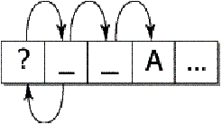

| Version | 2 |
| Authors | Mark Davis (mark.davis@us.ibm.com) |
| Date | 2002-08-09 |
| This Version | http://www.unicode.org/reports/tr29/tr29-2.html |
| Previous Version | http://www.unicode.org/reports/tr29/tr29-1.html |
| Latest Version | http://www.unicode.org/reports/tr29 |
| Tracking Number | 2 |
This document describes guidelines for determining default boundaries between certain significant text elements: grapheme clusters (“user characters”), words, and sentences. For line-break boundaries, see UAX #14: Line Breaking Properties.
This document is a draft Unicode Technical Report. Publication does not imply endorsement by the Unicode Consortium. This is a draft document which may be updated, replaced, or superseded by other documents at any time. This is not a stable document; it is inappropriate to cite this document as other than a work in progress.
Note: The intention is for this document to become a UAX, once approved.
A list of current Unicode Technical Reports is found on [Reports]. For more information about versions of the Unicode Standard, see [Versions]. Please mail corrigenda and other comments to the author(s). The References provide related information that is useful in understanding this document.
Please mail corrigenda and other comments to the author(s).
This document describes guidelines for determining default boundaries between certain significant text elements: grapheme clusters (“user characters”), words, and sentences. It updates most of 5.15 Locating Text Element Boundaries, except for the line-break boundaries, which are covered in UAX #14: Line Breaking Properties.
A string of Unicode-encoded text often needs to be broken up into text elements programmatically. Common examples of text elements include what users think of as characters, words, lines (more precisely, where line breaks are allowed), and sentences. The precise determination of text elements may vary according to orthographic conventions for a given script or language. The goal of matching user perceptions cannot always be met exactly because the text alone does not always contain enough information to unambiguously decide boundaries. For example, the period (U+002E full stop) is used ambiguously, sometimes for end-of-sentence purposes, sometimes for abbreviations, and sometimes for numbers. In most cases, however, programmatic text boundaries can match user perceptions quite closely, or at least not surprise the user.Rather than concentrate on algorithmically searching for text elements themselves, a simpler and more useful computation looks instead at detecting the boundaries between those text elements. The determination of those boundaries is often critical to the performance of general software, so it is important to be able to make such a determination as quickly as possible.
The default boundary determination mechanism provides a straightforward and efficient way to determine some of the most significant boundaries in text: grapheme clusters (what end-users usually think of as characters), words, and sentences. (Line boundaries are to be found in UAX #14: Line Breaking Properties.)
Boundary determination builds upon the uniform character representation of the Unicode Standard, while handling the large number of characters and special features such as combining marks and conjoining jamo in an effective manner. As this mechanism lends itself to a completely data-driven implementation, it can be tailored to particular orthographic conventions or user preferences without recoding.
The large character set of the Unicode Standard and its representational power place requirements on both the specification of text element boundaries and the underlying implementation. The specification needs to allow for the designation of large sets of characters sharing the same characteristics (for example, uppercase letters), while the implementation must provide quick access and matches to those large sets. The mechanism also must handle special features of the Unicode Standard, such as combining or nonspacing marks and conjoining jamo.
A boundary specification defines different classes, then lists the rules for boundaries in terms of those classes. The character classes are specified as a list, where each element of the list is:
- A literal character
- A range of literal characters
- A property of a Unicode character, as defined in the Unicode Character Database (UCD):
- Non-boolean properties are given as <property>=<property value>, such as General_Category = Titlecase_Letter.
- Boolean properties are given as <property>=true, such as
Uppercase = true.- Other conditions are specified textually in terms of UCD properties.
- Boolean combinations of the above
The two special classes sot and eot stand for start and end of text respectively.
Each rule consists of a left side, a break symbol, and a right side. Either of the sides can be empty. The left and right sides use the above classes in regular expressions. For more information on regular expression syntax used, see UTR #18: Unicode Regular Expression Guidelines.
The break symbols are:
|
÷ |
Allow break here. |
| × | Do not allow break here. |
| → | Treat whatever on the left side as if it were what is on the right side. |
An underscore (“_”) is used to indicate a space in examples.
As in other cases, these are a logical description of the processes: implementations can achieve the same results without using code or data that follows these rules step-by-step. In particular, most production-grade implementations will use a state-table approach. In that case, the performance does not depend on the complexity or number of rules. The only feature that does affect performance is the number of characters that may match after the boundary position in a rule that is matched.
Some additional constraints are reflected in the specification. These constraints make the implementation significantly simpler and more efficient and have not been found to be limitations for natural language use.
Editorial Note: The Unicode 3.0 text contained text including more constraints and other descriptions, but that text had fallen out of date, and does not apply to the default boundaries described in this document, nor to UAX #14: Line Breaking Properties.
Different issues are present with different types of boundaries, as the following discussion and examples should make clear.
This is informative material. There are many different ways to divide text elements corresponding to grapheme clusters, words and sentences, and the Unicode Standard and this document do not restrict the ways in which implementations can do this.
This specification is a default mechanism; more sophisticated engines can and should tailor it for particular locales or environments. For example, good Thai, Lao, Chinese, or Japanese word-break boundaries require the use of dictionary lookup, analogous to English hyphenation. An implementation therefore may need to provide means to override or subclass the default mechanism described in this document. Note that tailoring can either add boundary positions or remove boundary positions, compared to the default specified here.
To maintain canonical equivalence, all of the following specifications are defined on NFD text, as defined in UAX #15: Unicode Normalization Forms [Reports]. A boundary exists in non-NFD text just in case it would occur at the corresponding position in NFD text. However, this is only a logical specification; in practice implementations can avoid normalization and achieve the same results. For more information, see §6 Implementation Notes.
One or more Unicode characters may make up what the user thinks of as a character or basic unit of the language. To avoid ambiguity with the computer use of the term character, this is called a grapheme cluster. For example, “G” + acute-accent is a grapheme cluster: it is thought of as a single character by users, yet is actually represented by two Unicode code points. For more information on the ambiguity in the term character, see UTR #17: Character Encoding Model [Reports].
Grapheme clusters include, but are not limited to, combining character sequences such as (g + °), digraphs such as Slovak “ch”, and sequences with letter modifiers such as kw. Grapheme cluster boundaries are important for collation, regular-expressions, and counting “character” positions within text. Word breaks, line breaks and sentence breaks do not occur within a grapheme cluster. In this section, the Unicode Standard provides a determination of where the default grapheme boundaries fall in a string of characters. This algorithm can be tailored for specific locales or other customizations, which is what is done in providing contracting characters in collation tailoring tables.
Note: In previous documentation, default grapheme clusters were previously referred to as “locale-independent graphemes”. The term cluster has been added to emphasize that the term grapheme as used differently in linguistics. For simplicity and to align with UTS #10: Unicode Collation Algorithm [Reports], the terms default and tailored are used in preference to locale-independent and locale-dependent, respectively.
As far as a user is concerned, the underlying representation of text is not important, but it is important that an editing interface present a uniform implementation of what the user thinks of as characters. Grapheme clusters commonly behave as units in terms of mouse selection, arrow key movement, backspacing, and so on. When this is done, for example, and an accented character is represented by a combining character sequence, then using the right arrow key would skip from the start of the base character to the end of the last combining character. In some cases, editing a grapheme cluster element by element may be the preferred way.
In those rare circumstances where end-users need character counts, the counts should correspond to the grapheme cluster boundaries.
There is not a one-to-one relationship between grapheme clusters and keys on a keyboard. A single key on a keyboard may correspond to: a whole grapheme cluster, a part of a grapheme clusters, or a sequence of more than one grapheme clusters.
The principal requirements for default grapheme cluster boundaries are the handling of combining marks and Hangul conjoining jamo. Boundaries may be further tailored for requirements of different languages, such as the addition of “ch” for Slovak, or Indic, Thai or Tibetan character clusters. For the rules defining the default boundaries, see Table 1, Default Grapheme Cluster Boundaries below.
Note: As with the other default specifications, implementations are free to override (tailor) the results to meet the requirements of different environments or particular languages.
Table 1. Default Grapheme Cluster Boundaries
| CR | U+000D CARRIAGE RETURN (CR |
| LF | U+000A LINE FEED (LF) |
| Control | General_Category = Line Separator (Zl), or General_Category = Paragraph Separator (Zp), or General_Category = Control (Cc), or General_Category = Format (Cf) |
| Extend | General Category = Non-spacing Mark (Mn), General_Category = Enclosing Mark (Me), or Other_GraphemeExtend = true |
| L | Hangul leading jamo: U+1100..U+115F |
| V | Hangul vowel jamo: U+1160..U+11A2 |
| T | Hangul trailing jamo: U+11A8..U+11F9 |
| LV | Any Hangul syllable that is canonically equivalent to a sequence of <L,V> |
| LVT | Any Hangul syllable that is canonically equivalent to a sequence of <L,V,T> |
| Any | Any character (includes all of the above) |
|
Break at the start and end of text. |
|||
| sot | ÷ | (1) | |
| ÷ | eot | (2) | |
|
Do not break between a CR and LF. Otherwise break before and after controls. |
|||
| CR | × | LF | (3) |
| Control | ÷ | (4) | |
| ÷ | Control | (5) | |
|
Do not break Hangul syllable sequences. |
|||
| L | × | ( L | V | LV | LVT ) | (6) |
| ( LV | V ) | × | ( V | T ) | (7) |
| ( LVT | T) | × | T | (8) |
|
Do not break before extending characters. |
|||
| × | Extend | (9) | |
|
Otherwise, break everywhere. |
|||
| Any | ÷ | Any | (10) |
A default grapheme cluster normally begins with a base character. Exceptions are when a combining mark is at the start of text, or it is preceded by a control (or format) character. The boundary of a default grapheme cluster can be determined by just the adjacent characters.
For more information on the composition of Hangul Syllables (with L, V, or T) see 3.11 Conjoining Jamo Behavior (revision) in UAX #28: Unicode Version 3.2 [Reports].
Degenerate Cases. As with other definitions in Chapter 5 and elsewhere, such definitions are designed to be simple to implement. They need to provide an algorithmic determination of the valid, default grapheme clusters, and exclude sequences that are normally not considered default grapheme clusters. However, they do not have to catch edge cases that will not occur in practice.
The definition of default grapheme clusters is not meant to exclude the use of more sophisticated definitions of tailored grapheme clusters where appropriate: definitions that more precisely match the user expectations within individual languages. For example, “ch” may be considered a grapheme cluster in Slovak. It is, however, designed to provide a much more accurate match to overall user expectations for characters than is provided by individual Unicode code points.
Display of Grapheme Clusters. Grapheme clusters are not the same as ligatures. For example, the grapheme cluster “ch” in Slovak is not normally a ligature, and conversely, the ligature “fi” is not a grapheme cluster. Default grapheme clusters do not necessarily reflect text display. For example, the sequence <f, i> may be displayed as a single glyph on the screen, but would still be two grapheme clusters.
For more information on the use of grapheme clusters, see UTR #18: Unicode Regular Expression Guidelines [Reports].
Word boundaries are used in a number of different contexts. The most familiar ones are double-click mouse selection, “move to next word” control-arrow keys, and “Whole Word Search” (WWS) for search and replace. They are also used in database queries, to determine whether elements are within a certain number of words of one another.
Word boundaries can also be used in so-called intelligent cut and paste. With this feature, if the user cuts a piece of text on word boundaries, adjacent spaces are collapsed to a single space. For example, cutting “quick” from “The_quick_fox” would leave “The_ _fox”. Intelligent cut and paste collapses this text to “The_fox”.
Here is an example of word boundaries.
| The | quick | ( | “ | brown | ” | ) | fox | can’t | jump | 32.3 | feet | , | right | ? |
There is a boundary, for example, on either side of the word brown. These are the boundaries that users would expect, for example, if they chose WWS. Matching brown with WWS works, since there is a boundary on either side. Matching brow doesn’t. Matching “brown” also works, since there are boundaries between the parentheses and the quotation marks.
For proximity tests, one sees whether, for example, “monster” is within 3 words of “truck”. That is done with the above boundaries by ignoring any words that do not contain a letter (or perhaps digit — whether or not digits count is task-specific), as in Example 2 below. Thus for proximity, “fox” is within three words of “quick”. This same technique can be used for “get next/previous word” commands or keyboard arrow-keys. There are other cases where the characters between given boundaries are ignored, based on the other types of characters.
| The | quick | brown | fox | can’t | jump | 32.3 | feet | right |
The word boundaries are related to the line boundaries, but are distinct: there are some word-break boundaries that are not line-break boundaries and vice-versa. However, it is relatively seldom that a line-break boundary is not a word-break boundary. One example is a word containing a SHY (soft hyphen). It will break across lines, yet is a single word.
Note: As with the other default specifications, implementations are free to override (tailor) the results to meet the requirements of different environments or particular languages.
Table 2. Default Word Boundaries
| Format | General_Category = Format (Cf) |
| Katakana | Script = KATAKANA, or Any of the following: U+30FC # KATAKANA-HIRAGANA PROLONGED SOUND MARK U+FF70 # HALFWIDTH KATAKANA-HIRAGANA PROLONGED SOUND MARK U+FF9E..U+FF9F # HALFWIDTH KATAKANA SOUND MARKS |
| ALetter | Alphabetic = true, or Any of the following modifier letters: U+02B9..U+02BA # PRIME..DOUBLE PRIME U+02C2..U+02CF # LEFT ARROWHEAD..LOW ACUTE ACCENT U+02D2..U+02DF # CENTRED RIGHT HALF RING..CROSS ACCE U+02E5..U+02ED # EXTRA-HIGH TONE BAR..UNASPIRATED U+05F3 (׳) geresh and not Ideographic = true and not Katakana = true and not Script = Thai and not Script = Lao and not Script = Hiragana |
| MidLetter | Any of the following: U+0027 (') apostrophe U+00AD () soft hyphen U+05F4 (״) gershayim U+2019 (’) curly apostrophe |
| MidNumLet | Any of the following: U+002E (.) period U+003A (:) colon (used in Swedish) |
| MidNum | Line_Break = Infix_Numeric and not MidNumLet = true |
| other | Other categories are from Line_Break (using the long names from PropertyAliases) |
|
Break at the start and end of text. |
|||
| sot | ÷ | (1) | |
| ÷ | eot | (2) | |
|
Treat a grapheme cluster as if it were a single character: the first character of the cluster. |
|||
|
GC |
→ |
FB | (3) |
|
Ignore interior Format characters. That is, ignore Format characters in all subsequent rules (except the last rule). |
|||
| X Format* | → | X | (4) |
|
Do not break between most letters. |
|||
| ALetter | × | ALetter | (5) |
|
Do not break letters across certain punctuation. |
|||
| ALetter | × | (MidLetter | MidNumLet) ALetter | (6) |
| ALetter (MidLetter | MidNumLet) | × | ALetter | (7) |
|
Do not break within sequences of digits, or digits adjacent to letters ('3a', or 'A3'). |
|||
| Numeric | × | Numeric | (8) |
| ALetter | × | Numeric | (9) |
| Numeric | × | ALetter | (10) |
|
Do not break within sequences like: ‘3.2’ or '3,456.789'. |
|||
| Numeric (MidNum | MidNumLet) | × | Numeric | (11) |
| Numeric | × | (MidNum | MidNumLet) Numeric | (12) |
|
Do not break between Katakana. |
|||
| Katakana | × | Katakana | (13) |
|
Otherwise, break everywhere (including around ideographs). |
|||
| Any | ÷ | Any | (14) |
Unfortunately not all issues can be resolved across languages (or even within a language, since there are ambiguities). The goal is to have as workable a default as possible; tailored engines can be more sophisticated about these matters.
Thai, Lao, Japanese and Chinese are cases where, as in LineBreak, a good implementation should not just depend on the default word boundary specification, but should use a more sophisticated mechanism. There must be some default, however, in the absence of such a mechanism. Where Hangul text is written without spaces, the same applies.
The hard hyphen is a tricky case. It is quite common for separate words to be connected with a hyphen: out-of-the-box, under-the-table, Anglo-american, etc. A significant number are hyphenated names: Smith-Hawkins, etc. When people do a “Whole Word” search or query, they expect to find the word within those hyphens. While there are some cases where they are separate words (usually to resolve some ambiguity such as re-sort vs. resort) it’s better overall to keep the hard hyphen out of the default definition.
Apostrophe is another tricky case. Usually considered part of one word (“can’t”, “aujourd’hui”) it may also be considered two (“l’objectif”). Also, one cannot easily distinguish the cases where it is used as a quotation mark from those where it is used as an apostrophe, so one should not include leading or trailing apostrophes. In some languages, such as French, tailoring it to break words may yield better results in more cases.
Certain cases like colon in words (c:a) are included even though they may be specific to relatively small user communities (Swedish) because they don’t occur otherwise in normal text, and so don’t cause a problem for other languages.
Format characters are ignored if they are interior. Thus <LRM><letter> will break, and <letter><LRM> will break, but there is no break in <letter><LRM><letter>.
| Open Issue:
As noted above, for Thai, Lao, Japanese and Chinese, a proper implementation will really be dictionary-based. The rule for katakana is included above, since the vast majority of the time there is no break. We could implement some rules that would disallow breaks where they clearly cannot happen; however, it is unclear whether that would be worth the effort. The rules could be something like the following for the given scripts:
Where prefix letters are something like: Prefix: U+0E40..U+0E44 # THAI CHARACTER SARA E..THAI
CHARACTER SARA AI MAIMALAI Suffix: U+0E30 # THAI CHARACTER SARA A |
Sentence boundaries are often used for triple-click or some other method of selecting or iterating through blocks of text that are larger than single words. They are also used to determine whether words occur within the same sentence in database queries.
Plain text provides inadequate information for determining good sentence boundaries. Periods, for example, can either signal the end of a sentence, indicate abbreviations, or be used for decimal points. Remember that these are, like the others, default boundaries, and may be tailored. One cannot, without much more sophisticated analysis, distinguish between cases like:
He said, “Are you going?” Mr. Smith shook his head.
“Are you going?” Mr. Smith asked.
Without analyzing the text semantically, it is impossible to be certain which of these usages is intended (and sometimes ambiguities still remain). However, in a large majority of cases, a straightforward mechanism works well.
Note: As with the other default specifications, implementations are free to override (tailor) the results to meet the requirements of different environments or particular languages.
Table 3. Default Sentence Boundaries
| Sep | Any of the following characters: U+000A LINE FEED (LF) U+000D CARRIAGE RETURN (CR) U+0085 NEXT LINE (NEL) U+2028 LINE SEPARATOR (LS) U+2029 PARAGRAPH SEPARATOR (PS) |
| Format | General_Category = Format (Cf) |
| Sp | Whitespace = true and not Sep = true |
| Lower | Lowercase = true |
| Upper | General_Category = Titlecase_Letter (Lt), or Uppercase = true |
| OLetter | Alphabetic = true, or Any of the following modifier letters: U+02B9..U+02BA # PRIME..DOUBLE PRIME U+02C2..U+02CF # LEFT ARROWHEAD..LOW ACUTE ACCENT U+02D2..U+02DF # CENTRED RIGHT HALF RING..CROSS ACCE U+02E5..U+02ED # EXTRA-HIGH TONE BAR..UNASPIRATED U+05F3 (׳) geresh and not Lower = true and not Upper = true |
| Close | General_Category = Open_Punctuation (Po), or General_Category = End_Punctuation (Pe), or Linebreak = Quotation (QU) |
| ATerm | Any of the following characters: U+002E FULL STOP |
| Term | Any of the following characters: U+0021 EXCLAMATION MARK U+003F QUESTION MARK U+0589 ARMENIAN FULL STOP U+061F ARABIC QUESTION MARK U+06D4 ARABIC FULL STOP U+0700 SYRIAC END OF PARAGRAPH U+0701 SYRIAC SUPRALINEAR FULL STOP U+0702 SYRIAC SUBLINEAR FULL STOP U+0964 DEVANAGARI DANDA U+1362 ETHIOPIC FULL STOP U+1367 ETHIOPIC QUESTION MARK U+1368 ETHIOPIC PARAGRAPH SEPARATOR U+1803 MONGOLIAN FULL STOP U+1809 MONGOLIAN MANCHU FULL STOP U+203C DOUBLE EXCLAMATION MARK U+203D INTERROBANG U+2048 QUESTION EXCLAMATION MARK U+2049 EXCLAMATION QUESTION MARK U+3002 IDEOGRAPHIC FULL STOP U+FE52 SMALL FULL STOP U+FE57 SMALL EXCLAMATION MARK U+FF01 FULLWIDTH EXCLAMATION MARK U+FF0E FULLWIDTH FULL STOP U+FF1F FULLWIDTH QUESTION MARK U+FF61 HALFWIDTH IDEOGRAPHIC FULL STOP |
|
Break at the start and end of text. |
|||
| sot | ÷ | (1) | |
| ÷ | eot | (2) | |
|
Break after paragraph separators. |
|||
| Sep | ÷ | (3) | |
|
Treat a grapheme cluster as if it were a single character: the first character of the cluster. |
|||
|
GC |
→ |
FB | (4) |
|
Ignore interior Format characters. That is, ignore Format characters in all subsequent rules. |
|||
| X Format* | → | X | (5) |
|
Do not break after ambiguous terminators like period, if the first following letter is lowercase, or if the immediately following letter is uppercase. For example, a period may be an abbreviation or numeric period, and not mark the end of a sentence. |
|||
| ATerm Close* Sp* | × | (¬( OLetter | Upper ))* Lower | (6) |
| ATerm | × | Upper | (7) |
|
Break after sentence terminators, but include closing punctuation, trailing spaces, and (optionally) a paragraph separator. |
|||
| ( Term | ATerm ) Close* | × | ( Close | Sp | Sep ) | (8) |
| ( Term | ATerm ) Close* Sp | × | ( Sp | Sep ) | (9) |
| ( Term | ATerm ) Close* Sp* | ÷ | (10) | |
|
Otherwise, do not break |
|||
| Any | × | Any | (11) |
Open Issues:
U+0387 GREEK ANO TELEIA |
Although boundaries are specified in terms of NFD text, in practice normalization is not required. None of the default specifications break within a sequence of non-spacing marks, which is the only part that can reorder in the formation of NFD. Nor do any of the specifications break between a base character and subsequent non-spacing marks.
The first rule for the default word and sentence specifications is to treat a grapheme cluster as a single character: the first character of the cluster. This would be equivalent to making the following changes to the subsequent rules.
The other special rule for the word and sentence specifications is to ignore interior Format characters. This would be equivalent to making the following further changes to the affected subsequent rules.
The above rules can be converted into a regular expression that will produce the same results. The regular expression must be evaluated starting at a known boundary (such as the start of the text), and take the longest match (except in the case of Sentence boundaries, where the shortest match needs to be used).
The conversion into a regular expression is fairly straightforward, although it takes a little thought. For example, Table 1. Default Grapheme Cluster Boundaries can be transformed into the following regular expression:
Control
| CR LF
| ( !Control? | L+ | T+ | L* ( LV? V+ | LV | LVT ) T* ) Extend*
Such a regular expression can then be turned into a very fast state machine. For more information on Unicode Regular Expressions, see UTR #18: Unicode Regular Expression Guidelines [Reports].
A further complication is introduced by random access. When iterating through a string from beginning to end, a regular expression / state machine works well. From each boundary to find the next boundary is very fast. By constructing a state table for the reverse direction from the same specification of the rules, reverse iteration is possible.
However, suppose that the user wants to iterate starting at a random point in the text, or detect whether a random point in the text is a boundary. If the starting point does not provide enough context to allow the correct set of rules to be applied, then one could fail to find a valid boundary point. For example, suppose a user clicked after the first space after the question mark in “Are_you_there? _ _ No,_I'm_not”. On a forward iteration searching for a sentence boundary, one would fail to find the boundary before the “N”, because the “?” hadn’t been seen yet.
A second set of rules to determine a “safe” starting point provides a solution. Iterate backward with this second set of rules until a safe starting point is located, then iterate forward from there. Iterate forward to find boundaries that were located between the safe point and the starting point; discard these. The desired boundary is the first one that is not less than the starting point. The safe rules must be designed so that they function correctly no matter what the starting point is, so they have to be conservative in terms of finding boundaries: only finding those boundaries that can be determined by a small context.

This process would represent a significant performance cost if it had to be performed on every search. However, this functionality can be wrapped up in an iterator object, which preserves the information regarding whether it currently is at a valid boundary point. Only if it is reset to an arbitrary location in the text is this extra backup processing performed. The iterator may even cache local values that it has already traversed.
State machines can also be combined with a code-based or table-based tailoring mechanism. For typical Unicode state machines, a Unicode character is typically passed to a mapping table that maps characters to character classes. This mapping can use an efficient mechanism such as a trie. Once a character class is produced, then it is passed to the state machine.
The simplest customization is just to adjust the values coming out of the character mapping table. For example, to put the appropriate quotation marks for a given language into the Close character class for sentence boundaries, artificial character classes can be introduced for different quotation marks. A table can be applied after the main mapping table to map those artificial character classes to the real ones. To change languages, a different small table is substituted. The only real cost is then an extra array look-up.
For code-based tailoring a different special range of character classes can be added. The state machine is set up so that any special character class causes the state machine to halt, and return a particular exception value. When this exception value is detected, the higher-level process can call specialized code according to whatever the exceptional value is. This can all be encapsulated so that it is transparent to the caller.
For example, Thai characters can be mapped to a special character class. When the state machine halts for one of these values, then a Thai word-break engine is invoked internally, to produce boundaries within the subsequent string of Thai characters. These boundaries can then be cached so that subsequent calls for next/previous boundaries merely return the cached values. Similarly Lao characters can be mapped to a different special class, causing a different engine to be invoked.
Thanks to Ted Hopp, Andy Heninger, and Eric Mader for their feedback on previous versions of this document.
| [FAQ] | Unicode Frequently Asked Questions http://www.unicode.org/unicode/faq/ For answers to common questions on technical issues. |
| [Glossary] | Unicode Glossary http://www.unicode.org/glossary/ For explanations of terminology used in this and other documents. |
| [Reports] | Unicode Technical Reports http://www.unicode.org/unicode/reports/ For information on the status and development process for technical reports, and for a list of technical reports. |
| [U3.1] | Unicode Standard Annex #27: Unicode 3.1 http://www.unicode.org/unicode/reports/tr27/ |
| [Versions] | Versions of the Unicode Standard http://www.unicode.org/unicode/standard/versions/ For details on the precise contents of each version of the Unicode Standard, and how to cite them. |
The following summarizes modifications from the previous version of this document.
Copyright © 2000-2002 Unicode, Inc. All Rights Reserved. The Unicode Consortium makes no expressed or implied warranty of any kind, and assumes no liability for errors or omissions. No liability is assumed for incidental and consequential damages in connection with or arising out of the use of the information or programs contained or accompanying this technical report.
Unicode and the Unicode logo are trademarks of Unicode, Inc., and are registered in some jurisdictions.